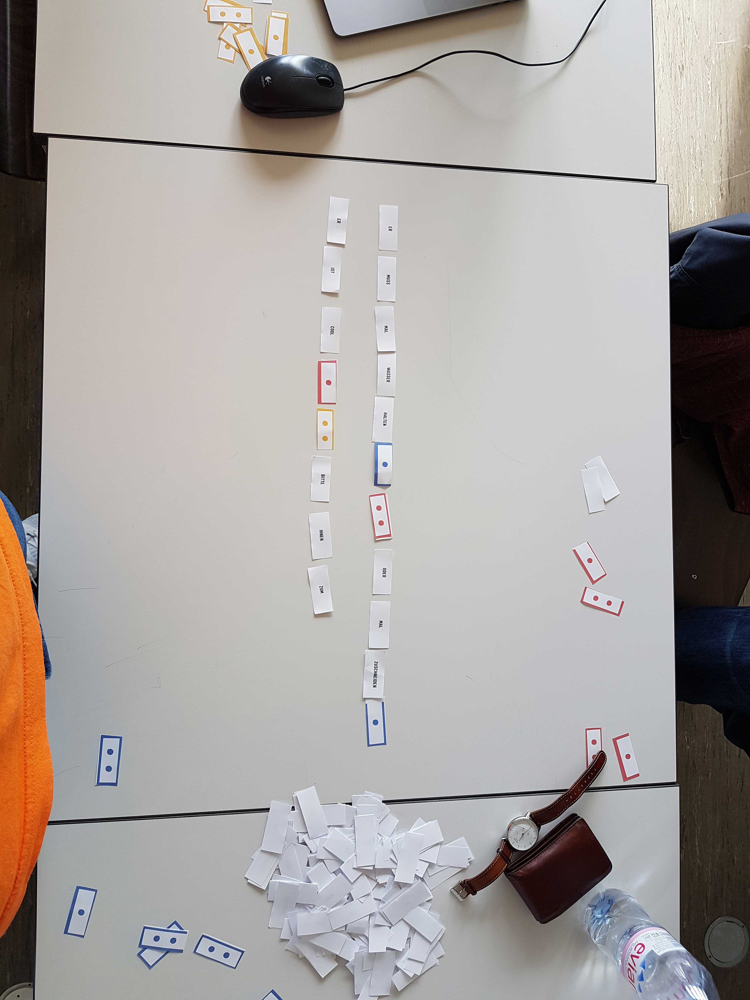
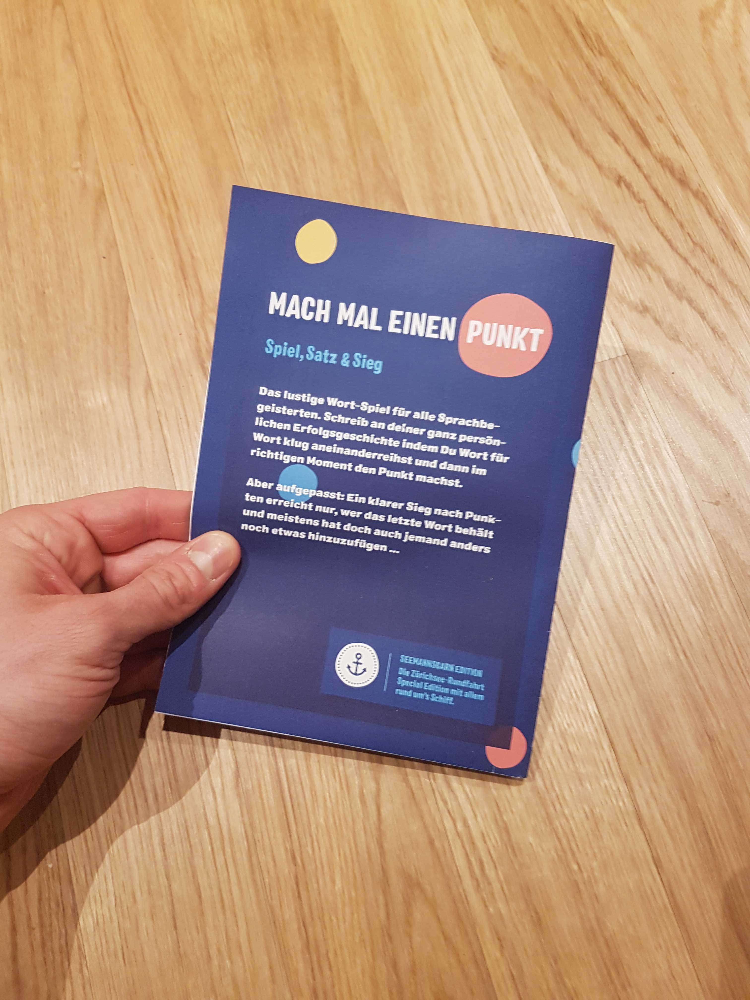
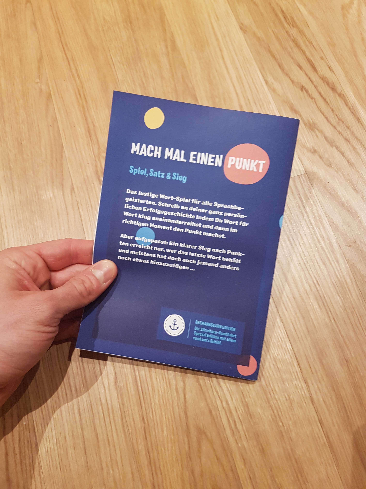

Das eigene Projekt
Wir haben die Aufgabe bekommen ein Experiment zu lancieren bei dem Rohmaterial für eine Erzählung generiert wird. Das Rohmaterial muss in irgendeiner Form bei einer kleinen Rundfahrt auf dem Zürichsee gesammelt werden. Bei einem kleinen Brainstorming wurden diverse Ideen notiert. Wie kann man möglichst ohne in den «Mikrokosmos Schiff» einzugreifen Rohmaterial sammeln?
Die Lösung, ein Lauschangriff. Immer wenn ich an belebten Orten bin schnappe ich unbewusst prägnante Sätze auf. Diese wollte ich verwenden. Beispiel; Vor ein paar jähren flanierte ich mit meiner Freundin an einem Weihnachtsmarkt, da hörte ich im vorbeigehen: «Weihnachtsmärkte sind nun mal voll». Dieser Satz ist mir bis heute im Gedächtnis geblieben.
In einer 3er-Gruppe haben wir diese Idee weiterverfolgt und ausgearbeitet. Am nächsten Samstag wird alles gesammelt was wir aufschnappen und ein Stäzepool generiert.

Auf dem Schiff
Heute war es so weit, wir haben unser Experiment durchgeführt. Alles was mit Sprache zu tun hatte wollten wir sammeln und uns so eine optimale Grundlage schaffen für unser weiteres vorgehen. Motiviert und voller Tatendrang warteten wir im Nieselregen und angenehmen 10 Grad auf das Schiff. Wir hofften auf genügend Personen die sich an diesem Samstagmorgen eine Schiffsfahrt antun würden.
Nach einigen Stationen füllte sich das Schiff allmählich und wir konnten die Personen genauer belauschen. Da ich auf dem Handy alles Notierte wirkte ich immer sehr unauffällig. Wie ein Schatten setzte ich mich in die Nähe von verschiedenen Gruppen.
Das Interessante an diesem Experiment war einerseits zu hören was andere Leute so untereinander Diskutieren, aber auch das eigene Verhalten. Mir ist aufgefallen wie selektiv wir beim Hören sind, ich konnte nur einem Gesprächen folgen. Ansonsten war alles um mich ein wildes durcheinander von Wortfetzen die nicht in Erinnerung blieben.
Unser Resultat war sehr ansehnlich, wir konnten eine beachtliche Menge an Sätzen festhalten, teilweisse sehr ernst, aber auch sehr humorvoll. Unser nächster Schritt wird das Sortieren und bearbeiten dieser Sätze sein.
Ein Spiel entsteht
4 Seiten gefüllt mit Wortfetzen, Sätzen und einzelnen Wörtern und dazu einen Ordner voller Bilder die ebenfalls Sprache enthielten. Wir mussten uns zuerst einen Überblick verschaffen. In welche Richtung werden wir mit diesem Material gehen? Unsere Idee von einem Spiel schwebte immer noch in unseren Köpfen, doch wie bringen wir diesen riesigen Wörter/Sprachpool in ein Spiel, welches diesen als Grundlage für eine spielerische Erzählung nutzt?
Brainstorming war angesagt, wir sind an den runden Tisch gesessen (er war wirklich rund) und haben unseren Ideen freien lauf gelassen. Was gibt es für Spiele mit Sprache? Kennen wir solche Spiele eventuell schon? Können wir ein simples Spiel entwickeln dass trotzdem Spass macht? Nehmen wir uns zu viel vor? Das sind alles Fragen die im Raum standen und beantwortet werden wollten

Es muss doch möglich sein ein Wortspiel bei dem man der Reihe nach Wörter ablegen kann spannend zu gestalten. Und plötzlich kam die Idee, mach mal einen Punkt! Das beenden und öffnen eines Satzes. Der Reihe nach werden die Wörter abgelegt, immer so dass sie einen Satz fortführen oder falls dies nicht möglich ist, einen neuen Satz beginnen. Der spannende Twist ist, man kann die Sätze mit Satzpunktkarten schliessen und sich so Punkte für den Satz sichern. Jedoch kann man Sätze wieder öffnen mit einer Doppelpunkt Karte und so den Satz fortführen und die Arbeit des Vorgängers zunichte machen.
TestlaufEndlich hatten wir eine Idee und eine grobe Vorstellung wie das Spiel ablaufen könnte! Sofort haben wir losgelegt und einen Prototypen entwickelt mit Papierschnipsel. Das Spiel sah so vielversprechend aus dass Basil (unser Dozent für Experimentelles Erzählen) gleich eine Runde «Mach mal einen Punkt!» mitspielen wollte. So haben wir einen kleinen Probelauf gestartet, welcher erstaunlich gut funktioniert hat.
Entwurf Spielregeln
Im Team wurde die erste Fassung der Spielregeln besprochen. Über die Cloud haben wir uns ausgetauscht und daran herumgefeilt, herausgekommen ist ein erster grober Entwurf, welcher in der folgenden Galerie einsehbar ist. Die grosse Schwierigkeit besteht darin dem Spiel den einen Kniff zu geben um es spannend zu gestalten. Niemand will ein Spiel spielen bei dem jede Runde gleich und jeder Zug vorhersehbar ist. Ebenfalls gestaltete es sich schwierig die Vorstellungen von einem Spiel aller Beteiligten in ein Regelwek zu verpacken.


{kind=link}
Der Prototyp
Heute haben zum Brainstorming zusammengerauft und uns überlegt wie dieses Spiel genau entstehen kann. Wie gross sollten die Karten sein? Wie die einzelnen Karten gestaltet werden? Müssen wir die Spielregeln noch mehr verfeinern?
Wolfgang hatte vorausschauend eine Druckform erstellt, in diese haben wir unsere Wörter ein erstes mal abgefüllt. Ein wunderbares Gefühl. Man betrachtet zum ersten mal wie die Wörter nicht in die Druckform passen, da alle unterschiedlich lang sind und nach jedem einzelnen Wort noch ein Umbruch steht.
Nach einer weiteren Korrekturrunde konnten die Karten für einen Prototypen ausdruckt werden. Die Kurze Probe war ziemlich vielversprechend und ich freue mich extrem darauf was noch alles kommt.
{kind=link}
{kind=link}
{kind=link}
{kind=link}
{kind=link}
Ferienplanung
Wir mussten unsere Aufgaben verteilen, damit wir über die Ferien mit unserem Projekt abschliessen konnten. Schlussendlich konnten wir unsere Aufgaben fix verteilen und haben das ganze mittels Wunderlist verbindlich gemacht. So hätte jeder wenigsten ein schlechtes gewissen wenn er in Verzug geraten würde. Planung abgeschlossen, es gab viel zu tun in unseren Herbstferien.
Herbstferien
In diesen Ferien gab es viel zu tun, deshalb vermeide ich ab jetzt das Wort Freien konsequent in diesem Beitrag. Mein Part in diesen 2 Wochen war, das ausarbeiten der Regeln und das setzen der Dokumentation inkl. Spielanleitng. Wolfgang arbeitete für uns an der Schachtel und an dieser konnten wir unsere Gestaltung anlehnen.
Anspruchsvoll daran war, dass wir uns an einer klassischen Spielanleitung orientierten. Das heisst es musste das Format einer Packungsbeilage haben und trotzdem den ganzen Inhalt abbilden. Schlussendlich war meine Lösung ein auf ein A5 gefaltetes A3. Durch den Folder hatten wir auch den gewünschten Packungsbeilagen-Effekt.
Durch unsere vorrangige Planung der Ferien mit Wunderlist, sind wir sehr zügig vorangekommen. Am Schluss waren nur noch die Punkte Drucken und Schneiden offen. Wir einigten uns darauf die Infrastruktur unsere Schule zu nutzen und mit der rasiermesserscharfen Schneidemaschine die Karten millimetergenau auszuschneiden.
 

{kind=link}


{kind=link}
{kind=link}
↓Download Dokumentation
Präsentation
Heute war es so endlich so weit, wir konnten unser Projekt im Unterricht präsentieren. Doch zuerst, mussten wir unsere Karten ausschneiden. Wie angekündigt, die Schneidemaschine war nicht unbedingt das Gelbe vom Ei, nett ausgedrückt. Doch auch diese Hürde haben wir genommen.
Wir bauten unsere Präsentation im Stile einer gemütlichen Spielrunde auf. Dazu bildeten wir 2 Gruppentische welche mit einem Tischtuch und Smarties versehen wurden. Wir stellten unser Spiel kurz vor, erläuterten unsere Visionen unser Vorgehen und stellten die Regeln vor. Danach wurde gespielt.
Es war das erste Mal, dass unser Spiel in dieser kompletten Form gespielt wurde. Es funktionierte erstaunlich gut, jedoch war es nicht ganz so flüssig wie wir uns dies erhofft hatten. Ein Problem war sicherlich die Konzentration auf einen Satz. Jeder wollte seinen Satz immer länger und länger machen. Teilweise wurden die Sätze richtiggehend zurechtgebogen damit dieses eine Wort noch platz hat. Verbesserungspotential ist also noch reichlich vorhanden.

Fazit
Am Schluss von unserem Experiment halten wir unser Spiel in den Händen. Ein Spiel welches komplett aus Sätzen generiert wurde, welche auf dem Schiff gefallen sind. Man könnte unser Experiment an jedem beliebigen Ort durchführen und so etliche Editionen von unserem Spiel erstellen.
{kind=link}
{kind=link}

{kind=link}
Eine Schwierigkeit stellte das Regelwerk für unser Spiel dar. Ein Spiel ist nur so gut, wie sein Regelwerk ausgearbeitet ist. Wir mussten dem Spiel das gewisse Etwas verleihen. Es muss Wendungen beinhalten und eine Wettbewerbs situation geschaffen werden um die Spieler anzuspornen. Das Ganze gestaltet sich jedoch sehr schwierig und ein ausgefeiltes Regelwerk bedarf viel mehr Zeit, als uns zur Verfügung stand. Jedoch sind wir zuversichtlich dass unser Spiel funktioniert und Spass macht.
In Zukunft werden wir bei gestalterischen Arbeiten mehr auf das «Grundrauschen», die Details welche wir ausgeblendet haben achten. Oftmals verbergen sich in ihnen ungeahnte kreative Lösungs- und Herangehensweisen. Allgemein sollten wir im Alltag unser Blick und Hörfeld vom Fokus lösen und uns von den verschiedenen Einflüssen, welche unsere Umwelt bereithält inspirieren lassen.
Merci fürs Dureläse!